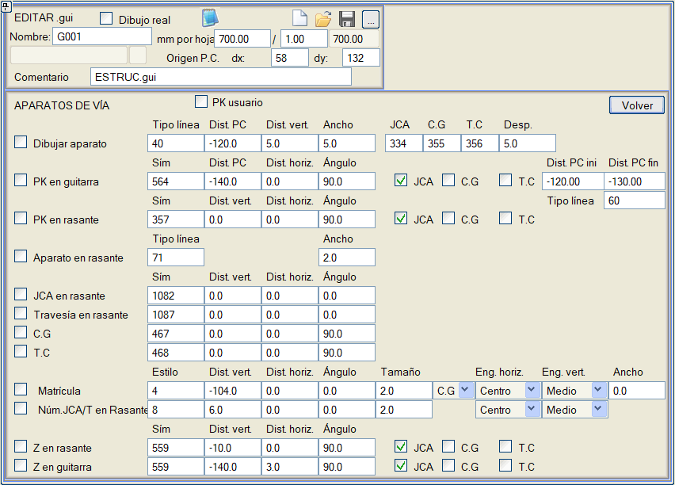

Demiryolu projelerinde, her güzergahta tanımlanan makas ve hat elemanlarını boykesit paftalarında göstermek gerekebilir. Bunun için aşağıdaki menü kullanılır:

Kilometreler, Kullanıcı KM seçeneği kullanılarak Kilometre Eşitliklerinden (Dengelerinden) türetilebilir.
- Elemanı çiz: Makas ve hat elemanını belirtilen çizgi tipiyle gösterir. Çizim, diyagramın genişliğine uyarlanacak ve ayrıca yaslanma rayı başlangıç eklemi (JCA), geometrik merkez veya matematiksel merkez ve topuk için belirlenen semboller, her üçü de belirli bir öteleme ile gösterilecektir.
- KM'yi bilgi bandında/kırmızı kotta göster: Kilometreyi belirlenen sembol tipi, karşılaştırma düzlemine (eğer bilgi bandında gösteriliyorsa) veya kırmızı kota (eğer üzerinde gösteriliyorsa) olan mesafe, yatay öteleme ve açı ile etiketler. Gösterilecek kilometre, yaslanma rayı başlangıç ekleminin, matematiksel merkezin ve/veya topuğun kilometresi olabilir ve eğer bilgi bandında gösteriliyorsa, o kilometrede karşılaştırma düzlemine referanslı iki mesafe arasında belirli bir çizgi tipiyle dikey bir çizgi çizilecektir.
- Eleman/JCA/Kesim kırmızı kotta: doğrudan kırmızı kot üzerinde makas ve hat elemanlarını (belirtilen çizgi tipi ve kalınlığı ile) ve yaslanma rayı başlangıç eklemlerini ve kesişimleri numaralarıyla (bir etiket kullanarak ve referans aldıkları kırmızı kot noktasına göre dikey ve yatay bir mesafede ve belirli bir açıyla) gösterir.
- G.M.: Kırmızı kot üzerinde, elemanın geometrik merkezini bir sembolle gösterir.
- T.C.: Kırmızı kot üzerinde, elemanın topuğunu bir sembolle gösterir.
- Plaka No: Makas ve hat elemanının plaka numarasını, geometrik merkeze, yaslanma rayı başlangıç eklemine veya topuğa göre stil, yatay ve dikey ötelemeler, açı ve bağlantı noktası ile etiketler. Genişlik kutucuğu aracılığıyla, metin sapma yönüne bağlı olarak aşağı veya yukarı kaydırılabilir.
- JCA/T No kırmızı kotta: Kırmızı kot üzerinde JCA numarasını ve önekini etiketler.
- Z kırmızı kotta/bilgi bandında: ilgili JCA, G.M. veya T.C. ile birlikte, elemanın ilgili noktalarının kırmızı kottaki veya bilgi bandındaki kotunu etiketler.
Program kütüphanesinde yer alan Apa_Via.gui, ApaVia2.gui ve Apa_via3.gui şablonları bu seçenekleri kullanır.
|